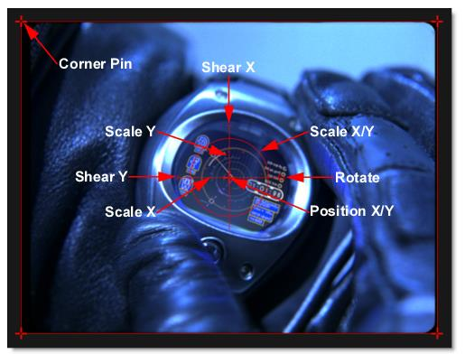

Transform
Description
Transform your image using Position, Scale, Rotation, Corner-Pin, Shear and Crop controls. Match Move and Stabilization can also be applied to the image when a node with tracking data is plugged into the Data input.
Node Group
Transform.
Controls
Transform
Transform
Selects point trackers and tracked layers from the node connected to the Data input. Transform is only enabled when Mode > Match Move and Stabilize are selected.
Surface
Selects the layer surface from the input node. Surface is only enabled when Mode > Insert is selected.
Mode
Match Move
Match moves the image based on the tracking data.
Stabilize
Stabilizes the image based on the tracking data.
Insert
Uses the Layer > Surface corner points to set the insert corner-pin.
Crop
Top
Crops the image from the top down.
Bottom
Crops the image from the bottom up.
Left
Crops the image from left to right.
Right
Crops the image from right to left.
Corner-Pin
The image can be corner pinned by adjusting the Corner-Pin values as well as dragging the four points on the corners of the screen.
Upper-Left
Controls the X and Y position of the Upper Left Point.
Upper-Right
Controls the X and Y position of the Upper Right Point.
Lower-Right
Controls the X and Y position of the Lower Right Point.
Lower-Left
Controls the X and Y position of the Lower Left Point.
Position
X Axis
The horizontal position of the image.
Y Axis
The vertical position of the image.
Scale
X Axis
The horizontal scale of the image.
Y Axis
The vertical scale of the image.
Gang
The X Axis and Y Axis values can be ganged together.
Rotate
In addition to the standard position and scale controls, the image can be rotated. Positive values rotate clockwise and negative values rotate counter-clockwise.
Shear
X Axis
Skews the image left and right.
Y Axis
Skews the image up and down.
Gang
The X Axis and Y Axis values can be ganged together.
Anchor
X Axis
Defines the point on the X axis where the image will be positioned, rotated, scaled or sheared.
Y Axis
Defines the point on the Y axis where the image will be positioned, rotated, scaled or sheared.
Gang
The X Axis and Y Axis values can be ganged together.
Filter
Chooses the filtering method when transforming the image. Mitchell is the default.
Triangle
The Triangle filter is not the highest quality, but fine for scaled images.
Quadratic
Quadratic is like triangle, but more blur with fewer artifacts. It offers a good compromise between speed and quality.
Cubic
Cubic is the default filter in Photoshop. It produces better results with continuous tone images, but is slower than Quadratic. If the image contains fine details, the result may be blurrier than desired.
Catmull-Rom
This produces good results with continuous tone images which are scaled down, producing sharp results with fine detailed images.
Gaussian
Gaussian lacks in sharpness, but is good with ringing and aliasing.
Mitchell
A good balance between sharpness and ringing, Mitchell is a good choice when scaling up.
Sinc
Keeps small details when scaling down with good aliasing.
Edge Mode
Determines how the edges of the frame are handled.
Transparent
Allows the edge of the result to become transparent.
Repeat
Repeats edge pixels to generate opaque pixels along the edge of the result.
Reflect
Reflects pixels along the edge of the result.
Wrap
Portions of the image that move off the edge of the frame reappear on the opposite side.
Transform On-Screen Controls
Shortcut | Action |
|---|
Drag small center cross | Moves the image’s X/Y Position |
Drag on the large cross’s horizontal and vertical lines | Scales the image horizontally or vertically |
Drag large center circle | Proportionally scales the image |
Drag small circle at 3 o’clock position | Rotates the image |
Drag crosses on corners of image | Corner-pins the image |
Drag bars at 9 and 12 o’clock positions | Shears the image |
Alt-click-drag | Moves the anchor point to a different area of the image |
Motion Blur
Enable
Turns Motion Blur on or off. The default is off.
Shutter Angle
Determines how long the camera shutter stays open when a picture is taken-- higher values create more motion blur. The range of the Shutter Angle is 0-720 and defaults to 180. Measured in degrees, it simulates the exposure of a rotating camera shutter. The shutter angle uses the footage frame rate to determine the simulated exposure. For example, a shutter angle of 180 degrees (50% of 360 degrees) for 24fps footage creates an effective exposure of 1/48 of a second. Typing 1 degree applies almost no motion blur, and typing 720 degrees applies a high degree of motion blur.
Shutter Phase
Offsets the point in time, either forward or reverse, when the shutter opens. The range of the Shutter Phase is -360 to 360 and defaults to -90.
Motion Samples
Renders intermediate frames equal to the Motion Samples value and accumulates them, one over the other, on a single frame. The higher the number, the smoother the motion. The Motion Samples range is from 1-256 and defaults to 16.
Note: Normally, motion blur is calculated going forward, so if there is no motion beyond the end of a clip, there won’t be motion blur on the last frame. To work around this, add an extra frame or two to the end of the work range in the Timebar and move the last transform keyframes to be outside of the session range.